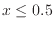
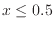
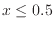

Next:
or
Up:
Operations
Previous:
max
and
Logical and of
and
, where

means false, and
means true. The output is 1 or 0, depending on the result being true (1) or false (0) respectively.

 and
and  , where

means false, and
, where

means false, and  means true. The output is 1 or 0, depending
on the result being true (1) or false (0) respectively.
means true. The output is 1 or 0, depending
on the result being true (1) or false (0) respectively.